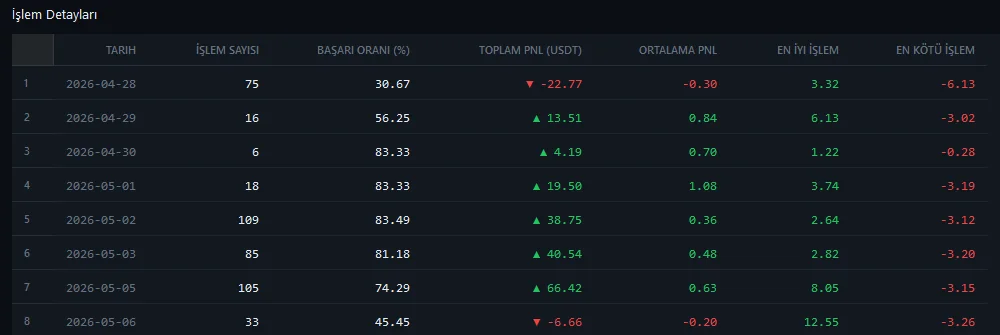

Закрытые позиции
История исполнения сделок и архивы
Каждая закрытая позиция с ценой входа и выхода, PnL, длительностью и причиной закрытия. Фильтры по символу, направлению, PnL и дате; экспорт в CSV.

Реальный экран приложения, снят в виртуальном режиме.
Учитесь на своей истории
Каждая закрытая сделка записывается; сводные карточки показывают всего сделок, прибыльные, убыточные и общий PnL.
Каждая сделка со всеми деталями
Для каждой закрытой позиции записываются символ, направление, цены входа и выхода, PnL в процентах и USDT, длительность, время открытия и закрытия.
- Видна причина закрытия: Stop Loss, максимальная длительность и др.
- Сводка: всего сделок, прибыльные, убыточные, общий PnL
- Виртуальные и реальные сделки — по одной схеме

Найдите нужное
Сочетайте поиск по символу с фильтрами направления, PnL и даты, чтобы сосредоточиться на нужных сделках.
- Направление: BUY или SELL
- PnL: в прибыли или в убытке
- Сужение по диапазону дат
Собственный анализ
Экспортируйте записи в CSV и изучайте их в таблице. Общую картину смотрите на экране отчётов.
- Экспорт в CSV
- Отчёты: дневная сводка и доля успешных сделок
- В отчётах — CSV, PDF и Excel

Что есть в истории сделок?
Детали — в истории, общая картина — в отчётах.
Детали сделки
Вход, выход, PnL %, PnL USDT, длительность, время открытия и закрытия.
Причина закрытия
Почему сделка закрылась: стоп-лосс, максимальная длительность и др.
Фильтры
Фильтры по символу, направлению, PnL и дате.
Экспорт в CSV
Экспортируйте записи для анализа в таблице.
Сводные карточки
Всего сделок, прибыльные и убыточные, общий PnL.
Виртуальный режим
Сделки виртуального режима отслеживаются по той же схеме.
Частые вопросы
Можно ли экспортировать историю сделок?
Да. Закрытые позиции экспортируются в CSV; на экране отчётов доступны также CSV, PDF и Excel.
Зачем нужна причина закрытия?
Она показывает, закрылась ли сделка по стоп-лоссу или по истечении времени, и помогает понять работу стратегии и настроек риска.
Говорят ли прошлые результаты о будущем?
Нет. Прошлые результаты не гарантируют будущих.
Связанные страницы
Проверьте стратегию в виртуальном режиме уже сегодня
Скачайте приложение, соберите стратегию и посмотрите, как она работает, без реальных денег.